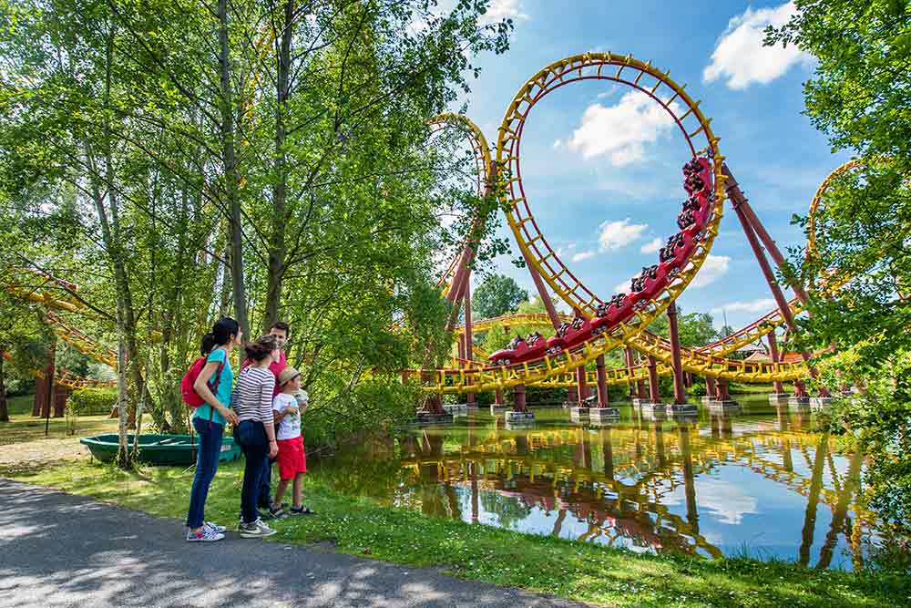
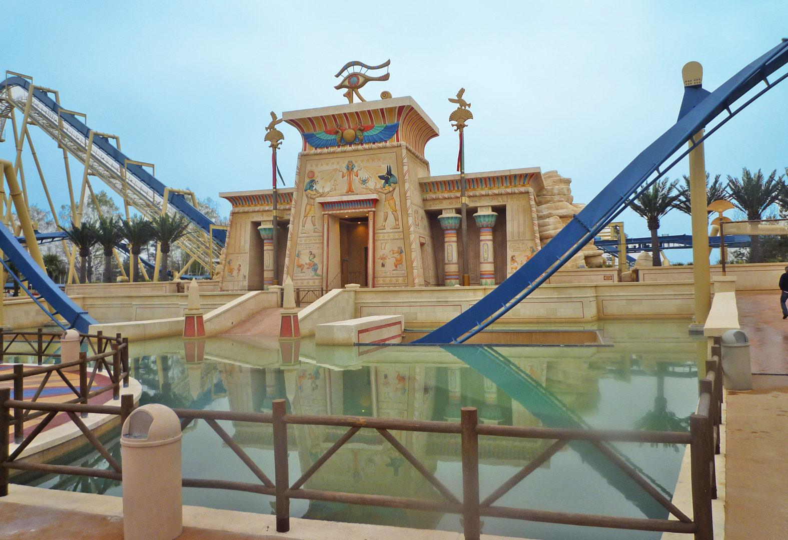
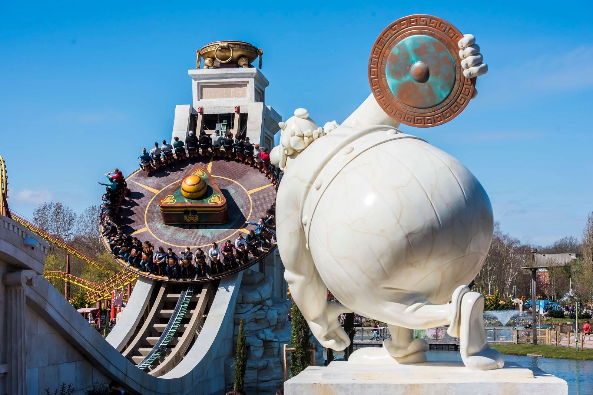

Goudurix

Vous avez le goût du risque ? Pour le savoir, embarquez à bord de notre hallucinant grand huit.
Assurancetourix l’a testé et approuvé. On raconte qu’il n’a jamais chanté aussi aigu que le jour où il a testé l’attraction.
Découvrir
Oziris

Lancés à pleine vitesse à 40 m de hauteur sur ces montagnes russes inversées, 9[3] vous enchaînez les loopings et vrilles au cœur du Parc.
Le ciel ne va peut-être pas vous tomber sur la tête mais vous risquez quand même de voir quelques étoiles !
Découvrir
Tonnerre de Zeus

Décollage immédiat vers l’Olympe avec cette montagne russe toute en bois. Emotion garantie !
A 30 mètres de haut, le parcours est vertigineux et la vue à couper le souffle !
Enfin, si vous ouvrez bien l'œil, car à 8[1] km/h, le paysage défile vite !
Découvrir
Discobelix

Que se passe-t-il quand Obélix s’essaie au lancer de disque ? Ça tourbillonne drôlement !
Découvrir